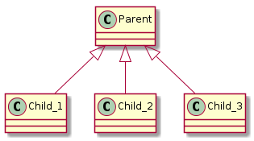

The Rye Mother gathers children.
Source: Wikipedia
The RyeMother uses entry points defined in the setup.py file. The entry_points use an ini-like format with the form:
[group]
name = module:object
In this case, the RyeMother wants to search the folder for class-definitions so the object is left out. As a concrete example, for the plugins, the entry points would look like this:
entry_points = """
[cameraobscura.plugins]
plugins = cameraobscura.plugins
"""
Note
The actual setup.py has other entries, this is just the plugins entry.
The [cameraobscura.plugins] defines a group name and you can put multiple entries under it for other modules or objects. plugins is the name that is used to reference the cameraobscura.plugins module in the code.
The RyeMother relies on several python modules.
| Package | Source |
|---|---|
| pkgutil | python standard library |
| importlib | python standard library |
| os.path | python standard library |
| inspect | python standard library |
| pkg_resources | setuptools |
The methods used:
pkg_resources.load_entry_point(dist, group, name) |
Return name entry point of group for dist or raise ImportError |
dirname(p) |
Returns the directory component of a pathname |
iter_modules([path, prefix]) |
Yields (module_loader, name, ispkg) for all submodules on path, or, if path is None, all top-level modules on sys.path. |
getmembers(object[, predicate]) |
Return all members of an object as (name, value) pairs sorted by name. |
The RyeMother’s __call__ method converts the parameters to a dictionary of class definition objects.
| Parameter | Description |
|---|---|
| parent | The Base Class of the child-classes that we want to import |
| group | Group name in the entry_points variable in setup.py (see Entry Points) |
| name | name of the module in the entry_points variable in setup.py |
| keyfunction | function to transform the keys of the dictionary (default uses the actual class names) |
The idea here is that to identify the classes that we’re interested in we’ll define them as children of a specific class.

The parent parameter for the RyeMother is the actual class definition object. For example, if the user of the RyeMother did the following:
from cameraobscura.plugins import BaseArguments
Then BaseArguments is what should be passed to the call and all the classes that inherit from it will be returned. If we defined cameraobscura.plugins as the group and plugins as the name in the setup.py entry_points variable as mentioned earlier, and we wanted to retrieve the Run class, we could use something like this:
mother = RyeMother()
children = mother(parent=BaseArguments,
group='cameraobscura.plugins',
name='plugins')
Run = children['Run']
run_instance = Run()
The keyfunction is used to change the keys in the dictionary. One of the reasons that the RyeMother was created was so that classes could be auto-discovered and displayed for the users. Since the human-readable name might not always match the class-name, rather than forcing the classes to change their names, the keyfunction can be used to make a limited tranformation of the strings used as the keys.
To make them lower-cased you could use something like:
keyfunction = lambda s: getattr(s, 'lower')()
The use of the gettattr might not seem intuitive, but since they recommend using string methods, I figured it’d be the best way. Another common transform might occur if the class names have a common suffix. Say they all have the suffix ‘Arguments’ and you don’t want that in the dictionaries keys. You could do something like:
keyfunction = lambda s: getattr(s, 'rstrip')('Arguments')
This is the main path for the __call__:
- Create a dictionary called children
- Import the package (folder) that contains the modules (files) that have the class definitions we want
- Get the package’s directory
- Create a prefix using the module’s package name
- Generate a list of module names within the imported module’s directory and add the prefix to them (<prefix>.<name>)
- Import each of the module names from the previous step
- For each of the modules import all members that are children of the parent base-class
- For each member, if keyfunction is defined, transform its name
- For each member, add it to the children dictionary, using the name as a key and the class-definition object as the value
RyeMother([exclusions, parent, ...]) |
A gatherer of child classes |
RyeMother.__call__([parent, group, name, ...]) |
The main interface |
{kind=link}